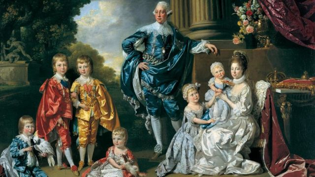

Tom Verica é um ator e diretor de televisão, conhecido por seu papel de Jack Pryor na série da NBC American Dreams. Como diretor, ele é conhecido pelas séries de Shonda Rhimes. De 2012 a 2018, Verica foi produtor executivo de Scandal, e em 2014 voltou a atuar em How to Get Away with Murder
Na série, a Rainha Charlotte é uma figura poderosa e carismática, que influencia a vida dos personagens principais. A personagem é retratada como uma mulher negra em uma posição de poder, o que é uma mudança significativa em relação à história real. A escolha de escalar uma atriz negra para interpretar a Rainha gerou algumas controvérsias, mas também foi elogiada por trazer mais diversidade e representatividade para a tela. A série é conhecida por sua produção luxuosa e detalhada, que recria com precisão a moda, a arquitetura e os costumes da época. Com um elenco talentoso, produção impressionante e roteiro envolvente, a série tem conquistado fãs em todo o mundo. Além disso, a inclusão de uma figura poderosa e carismática como a Rainha Charlotte, interpretada por uma atriz negra, é um passo importante para a diversidade e a representatividade na televisão.
Popular entre os fãs de Bridgerton, a minissérie Rainha Charlotte já se destaca com uma performance positiva entre a crítica. No agregador Rotten Tomatoes, a produção tem, inicialmente, uma taxa de aprovação de 95%, com base em 20 considerações. Segundo o consenso do site em questão, "um romance resplandecente entre dois dos personagens mais interessantes da saga Bridgerton, a série é um spin-off que sem dúvida aperfeiçoa a fórmula da série principal".Em reviews internacionais, como a do site Collider, o jornalista Arezou Amin elogia a produção, com destaque para os figurinos e efeitos visuais, avaliando que "de vestidos suntuosos e joias decadentes a penteados cada vez mais elaborados, a equipe criativa realmente se superou, elevando a aposta visual sem nunca sobrecarregar os personagens".
A história da minissérie antecede os acontecimentos de Bridgerton e acompanha o início do romance da Rainha Charlotte com o Rei George, bem como o casamento dos dois. Entretanto, a obra promete ir além de uma grande história de amor, pois essa produção derivada ainda mostrará uma transformação na alta sociedade logo após a ascensão da jovem à realeza e todos os desafios impostos pelo cargo de soberana
Embora seja uma obra de ficção, Rainha Charlotte é inspirada na história real do casal da realeza britânica. A Rainha Charlotte foi a esposa do Rei George III do Reino Unido, que governou de 1760 a 1820. Ela nasceu em Mecklenburg-Strelitz, na Alemanha, e se casou com o Rei em 1761, aos 17 anos. Durante seu reinado, a Rainha Charlotte teve 15 filhos, sendo 13 sobreviventes. Ela era conhecida por sua devoção à família e sua caridade. Além disso, a Rainha Charlotte foi uma patrona das artes e da cultura, apoiando escritores, artistas e músicos em sua corte. Seu legado também inclui o nome da cidade de Charlotte, na Carolina do Norte, EUA, que foi nomeada em sua homenagem.Na vida real, o monarca teve "surtos graves" entre 1788 e 1801, de acordo com o site oficial da família real britânica, até ser considerado permanentemente demente, em 1810. Ainda segundo o portal, historiadores médicos atribuem a instabilidade de George a uma doença hereditária chamada porfíria.
